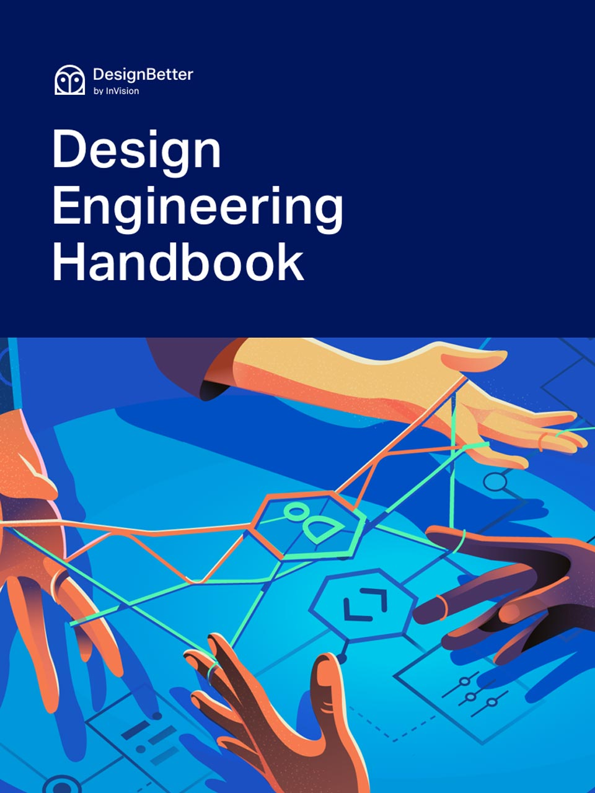
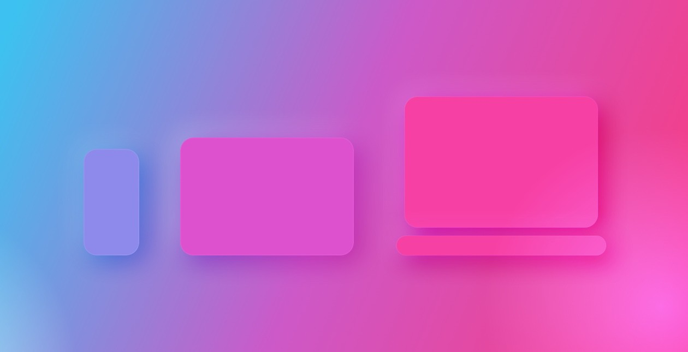
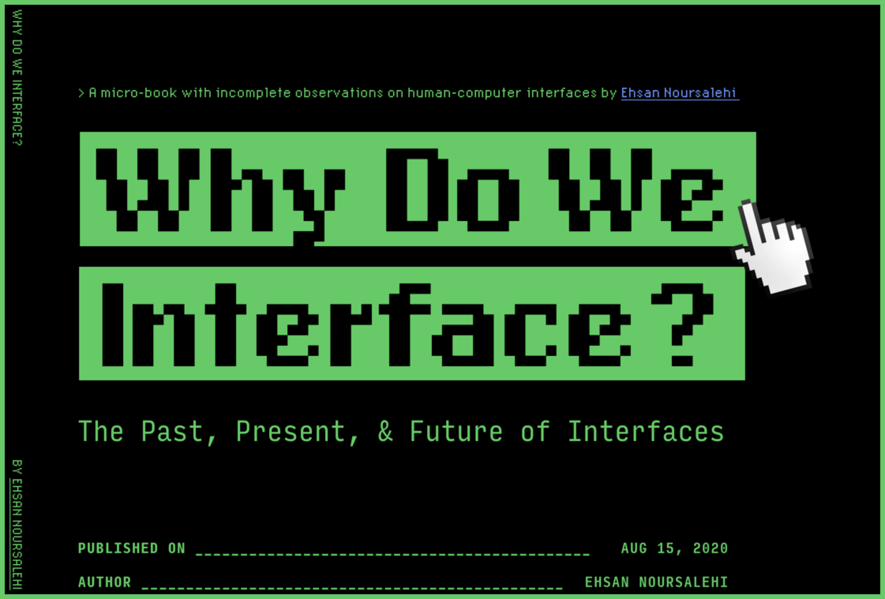
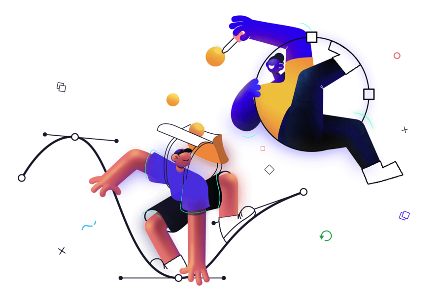
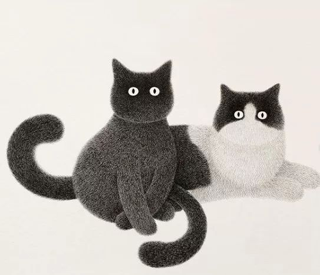
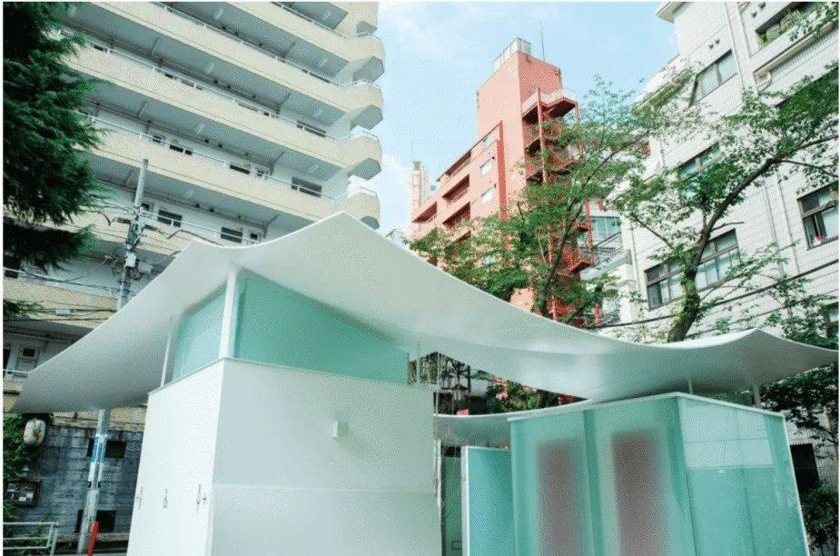

设计周刊 Design Weekly #21
Thu, Aug 20, 2020
🏷 设计资源
INVISION出品：设计工程手册
https://www.designbetter.co/design-engineering-handbook
了解设计工程作为创造优秀产品的重要学科，如何在加速创新的同时将形式和功能结合起来。可下载 EPUB、PDF和有声读物三种格式。

🏷 设计知识
UI 设计基础知识：屏幕
https://uxdesign.cc/ui-design-basics-screens-734bfbeffca9
世界很大但也有它的局限性，更何况那小小的屏幕。

🏷 设计文章
为什么要做界面？
关于界面的过去、现在和未来。

🏷 设计新闻
Designmodo 的十年总结
https://designmodo.com/10-years/
2020年8月，Designmodo将迎来10岁生日! ，一起来看看从一家小博客发展到 SaaS 业务的10 年幕后故事。

🏷 设计灵感
用一支5块钱的针管笔“撸猫”
https://mp.weixin.qq.com/s/q0aCEPvOMl1X9hsfbryqmA
画面极度舒适！马来西亚艺术家Kamwei Fong，把喵大爷“撸”得如此有板有眼。

🏷 随便看看
日本设计天团爆改公厕，明年一起去东京看厕所好吗？
https://www.shejipi.com/435590.html
近日来几个造型出挑的公厕设计引起了大家的关注，人们纷纷表示特别想去东京，主要是想去涩谷的公共厕所打卡。今天来聊聊这件事。
